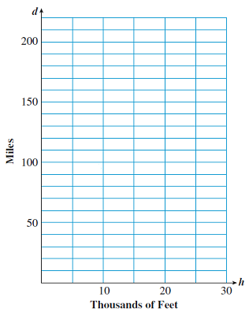

A good way to organize and display information is to create a graph. Graphs are especially useful for illustrating the relationship between two variables.
In an earlier lesson we considered bar graphs. The height of the bar illustrated the value of the variable. However, we don’t really need the whole bar to convey that information; we could instead place a dot at the top of each bar. If we connect the dots with line segments, we have created a line graph.
Example5.5.1.
The bar graph in figure (a) shows the percentage of all flights from U.S. airports that experienced late departures.
Make a line graph that gives the same information.
Describe the over-all trend in late departures over the time period 1995 to 2000.
We place a dot at the top of each bar, and connect the dots with line segments, as shown above in figure (b).
The percentage of late departures increased over the five-year period. There was a spike in 1996, returning to previous levels in the following year, and then a steady increase from 1997 to 2000.
Checkpoint5.5.2.
The bar graph shows the percentage of canceled flights at U.S. airports.
Make a line graph that gives the same information.
In which year was there a decline in canceled flights?
We can make a graph that shows the relationship between two variables. We first decide which variable is the input variable, and which is the output variable.
Example5.5.5.
Karen was born on Peter’s fourth birthday.
Make a table showing Karen’s age, \(K\text{,}\) and Peter’s age, \(P\text{.}\)
Write an equation for Peter’s age in terms of Karen’s age.
Make a graph showing the relationship between the variables.
On the grid, we label the horizontal direction with values of the input variable, and we label the vertical direction with values of the output variable.
For each pair of input/output values, we place a dot, or point, on the grid. For example, the point for \(K=9,~ 9=13\) is labeled on the grid below left.
For each pair of input/output values, we place a dot, or point, on the grid. For example, the point for \(K=9,~ 9=13\) is labeled on the grid below left.
Finally, we connect the points with a smooth curve, as shown below right. In this case, the curve is actually a straight line.
How to Plot Points.
The first variable (the input variable) tells us the location of the point in the horizontal direction.
The second variable (the output variable) tells us its location in the vertical direction.
Checkpoint5.5.6.
Plot the points given by the table.
\(x\)
0
10
30
50
\(y\)
800
700
500
300
Connect the points with a straight line. Extend your line to the edges of the grid.
Now that we know how to plot points, we can graph an equation.
Activity5.5.1.Graphing an Equation.
Uncle Herb is on a diet. He can have 1200 calories per day.
If Uncle Herb has 700 calories for lunch, how many calories can he have for dinner?
Write an equation for the number of calories, \(d\text{,}\) Uncle Herb can have for dinner if he consumes \(c\) calories for lunch.
Fill in the table for the given values of \(c\text{.}\)
\(c\)
200
400
600
800
1000
\(d\)
Plot the points from the table, and connect them with a straight line. Extend your line to the edges of the grid.
The cost of a pane of glass depends upon its area. The area of a square pane of glass is given by \(A = s^2\text{,}\) where \(s\) is the length of one side of the square, in feet, and \(A\) is the area of the square, in square feet.
Fill in the table for the given values of \(s\text{.}\)
\(s\)
0
1
2
3
4
5
\(A\)
\(\hphantom{000}\)
\(\hphantom{000}\)
\(\hphantom{000}\)
\(\hphantom{000}\)
\(\hphantom{000}\)
\(\hphantom{000}\)
Plot the points from the table, and connect them with a smooth curve. Extend your curve to the edges of the grid.
Note5.5.7.
Look back at the graphs in Activity 5.5.1, and notice the scales on the axes. We should choose scales to fit the values of the variables.
In Problem 1, the total number of calories was 1200, so we scaled each axis by 100’s from 0 to 1200.
In Problem 2, the values of \(s\) went for 0 to 5, while the values of \(A\) went from 0 to 25. We scaled each axis to include those values.
Steps for Graphing an Equation.
Make a table of values. Choose values for the input variable and use the equation to find the values of the output variable.
Choose appropriate scales and label the axes.
Plot the points from the table, and connect them with a smooth curve.
Subsection5.5.4Reading a Graph
Each point on the graph of an equation represents a pair of values for the variables that makes the equation true.
Example5.5.8.
The graph shows possible values for the length \(l\) and width \(w\) of a rectangle with a given area.
What is the length of the rectangle if its width is 12 inches?
Complete the table.
\(w\)
2
4
2
6
8
\(l\)
\(\hphantom{000}\)
\(\hphantom{000}\)
\(\hphantom{000}\)
\(\hphantom{000}\)
\(\hphantom{000}\)
Write an equation for the length of the rectangle in terms of its width.
We find the point on the graph whose \(w\)-value is 12. The \(l\)-value of that point is 2, so the length of the rectangle is 2 inches.
Just as we did in part (a), we find points on the graph with the given \(w\)-values, then read the \(l\)-value of each point on the vertical scale. Here is the completed table.
\(w\)
2
4
6
8
\(l\)
12
6
4
3
Notice that the product of \(l\) and \(w\) is 24 for each pair of values. Or we can say that to find \(l\text{,}\) we divide 24 by \(w\text{.}\) The equation for the length of the rectangle is
\begin{equation*}
l = \dfrac{24}{w}
\end{equation*}
Checkpoint5.5.9.
Refer to your graph of \(A=s^2\) in Problem 2 of Activity 5.5.1.
Use the graph to answer the question: You would like a square skylight to have an area of 20 square feet. How long should the sides be?
(Hint: Find the point on the graph with \(A=20\text{.}\) What is the value of \(s\) at that point? You will have to estimate your answer.)
Now verify your answer by solving an equation. (Hint: What is the opposite operation for squaring?)
If a car brakes suddenly while traveling at a high speed, its tires will leave skid marks on the road. The velocity \(v\) of the car just before braking is given in miles per hour by
\begin{equation*}
v = 4.9 \sqrt{d}
\end{equation*}
where \(d\) is the length of the skid marks, in feet.
Complete the table of values.
Hint: Follow theorder of operations: take the square root of \(d\text{,}\) then multiply the result by 4.9. Round your answers to the nearest whole number.
\(d\)
0
100
200
300
400
500
600
\(v\)
\(\hphantom{000}\)
\(\hphantom{000}\)
\(\hphantom{000}\)
\(\hphantom{000}\)
\(\hphantom{000}\)
\(\hphantom{000}\)
\(\hphantom{000}\)
Plot the points from your table, and connect them with a smooth curve.
If a car leaves skid marks 800 feet long, how fast was it going when it braked?
\(\blert{\text{Evaluate} ~v~ \text{for 800.}~~~~ v = }\)
Verify your answer on the graph.
\(\blert{\text{Draw a dot at the point on the graph with 800.}}\)
Use your graph to find the length of the skid marks left by a car traveling at 90 miles per hour when it braked.
Subsection5.5.5Vocabulary
bar graph
line graph
input variable
output variable
Exercises5.5.6Practice 5.5
1.
The graph shows monthly sales of rollerblading equipment at the Sports Exchange last year.
How much rollerblading equipment was sold in April?
In which month(s) did the Sports Exchange sell $900 worth of equipment?
In which month were sales the highest, and what were the sales that month?
Which month saw the greatest decrease in sales over the previous month?
2.
The graph shows the number of patients admitted to Mercy Hospital with work-related injuries last year.
How many patients suffered work-related injuries in March?
In which month(s) were the fewest patients with work-related injuries admitted to the hospital?
In which month were the most patients with work-related injuries admitted?
Find the longest period when the number of work-related injuries increased each month.
3.
The graph shows the number of students enrolled part-time or full-time at two-year colleges over a twenty-five year period.
How many students were enrolled part-time at two-year colleges in 1970?
In what year were approximately 1,900,000 students enrolled full-time
What was the total enrollment (part-time and full-time) in 1990?
By how much did part-time enrollment increase from 1975 to 1980?
4.
The graph shows the number of cases of AIDS diagnosed in women in Los Angeles County over several years.
How many cases of AIDS were diagnosed among African-American women in 1986?
How many cases were diagnosed among white women in 1991?
What was the total number of cases per 100,000 diagnosed in 1989?
What was the increase in the number of cases among African-American women from 1989 to 1990?
5.
The bar graph below appeared in the Los Angeles Times on December 15, 2000. It shows the projected increase in jobs in Southern California over the next 25 years.
The time intervals between bars are not equal.
6.
The bar graph below appeared in the Los Angeles Times on December 15, 2000. It shows the projected increase in the number of households in Southern California over the next 25 years.
Use the grid to create a line graph for the same information.
What feature of the original bar graph could be considered misleading?
7.
The table shows women’s annual earnings as a percentage of men’s from 1980 to 1989. [Source: Bureau of Labor Statistics].
Year
’80
’81
’82
’83
’84
’85
’86
’87
’88
’89
Percent
60
59
61.5
63.5
63.5
64.5
64
65
66
68.5
Use the data to create a line graph on the grid.
In which year(s) did women’s earnings make the greatest gain?
In which year(s) did women’s earnings decline, relative to men’s?
What was the net gain in women’s earnings (as a percentage of men’s) over the decade of the 1980’s?
8.
The table shows women’s annual earnings as a percentage of men’s from 1990 to 1999. [Source: Bureau of Labor Statistics].
Year
’90
’91
’92
’93
’94
’95
’96
’97
’98
’99
Percent
71.5
69.5
70.5
71.5
72
71.5
74
74.5
73
73
Use the data to create a line graph on the grid.
In which year(s) did women’s earnings make the greatest gain?
In which year(s) did women’s earnings decline, relative to men’s?
What was the net gain in women’s earnings (as a percentage of men’s) over the decade of the 1980’s? How does this compare to progress in the 1980’s?
9.
A national opinion poll asked voters the question "Do you agree or disagree that most men are better suited emotionally for politics than women?" The results are shown in the table. (Note that the question was not asked every year.) [Source: National Opinion Research Center]
Year
’74
’75
’77
’78
’83
’85
’86
’88
’89
’90
’91
’93
Percent Disagree
49
48
47
55
63
61
62
66
67
69
70
75
Percent Agree
44
48
46
43
35
38
36
33
28
26
25
20
On the grid at right, make two line graphs illustrating the data.
What trends in public opinion do you see in the graphs?
Why don’t the percent of people who agree and the percent who disagree in each year add up to 100%?
10.
As the "baby boomers" age, more people in their 40’s and 50’s are riding motorcycles. The table shows the number of motorcycle fatalities during the 1990’s. [Source: National Highway Traffic Safety Administration]
Year
1994
1995
1996
1997
1998
1999
Fatalities (under 35)
1500
1440
1280
1150
1240
1170
Fatalities (35 and over)
820
800
900
950
1050
1300
On the grid at right, make two line graphs illustrating the data.
What trends do you see in fatalities among motorcycle drivers?
During which year did the number of fatalities among older drivers first exceed the number of fatalities among younger drivers?
Exercise Group.
For Problems 11-18, answer with a sentence.
11.
How does a bar graph illustrate the values of a variable?
12.
How do we create a line graph from a bar graph?
13.
In the equation \(~B = 5 + H,~\) which variable is the input variable?
14.
Which variable do we scale in the vertical direction on a grid?
15.
What does a point on a graph represent?
16.
Explain how to use the values of the input and output variables to plot a point.
17.
Give three steps for graphing an equation.
18.
What does each point on the graph of an equation represent?
19.
The graph at right gives the weight, \(W\) in ounces, of a chocolate bunny that is \(h\) inches tall. State the values of the variables at point \(B\text{,}\) and explain what they tell you.
20.
The graph at right gives the altitude, \(a\text{,}\) in meters, of a hot-air balloon at \(t\) minutes after takeoff. State the values of the variables at point \(H\text{,}\) and explain what they tell you.
21.
Use the graph to complete the table of values.
\(x\)
0
20
40
60
\(y\)
\(\hphantom{000}\)
\(\hphantom{000}\)
\(\hphantom{000}\)
\(\hphantom{000}\)
Write an equation for \(y\) in terms of \(x\text{.}\)
22.
Use the graph to complete the table of values.
\(x\)
16
32
40
56
\(y\)
\(\hphantom{000}\)
\(\hphantom{000}\)
\(\hphantom{000}\)
\(\hphantom{000}\)
Write an equation for \(y\) in terms of \(x\text{.}\)
23.
Use the graph to complete the table of values.
\(p\)
20
50
80
120
\(k\)
\(\hphantom{000}\)
\(\hphantom{000}\)
\(\hphantom{000}\)
\(\hphantom{000}\)
Write an equation for \(k\) in terms of \(p\text{.}\)
24.
Use the graph to complete the table of values.
\(n\)
0
20
40
60
\(w\)
\(\hphantom{000}\)
\(\hphantom{000}\)
\(\hphantom{000}\)
\(\hphantom{000}\)
Write an equation for \(w\) in terms of \(n\text{.}\)
25.
Wrapping paper costs $1.50 per roll at an after-holiday sale.
Complete the table showing the price, \(p\text{,}\) (before tax) of \(r\) rolls of wrapping paper.
\(r\)
2
3
5
6
\(p\)
\(\hphantom{000}\)
\(\hphantom{000}\)
\(\hphantom{000}\)
\(\hphantom{000}\)
Write an equation for \(p\) in terms of \(r\text{.}\)
Grah your equation on the grid.
26.
Talia can burn 8 calories per minute while cycling.
Complete the table showing the number of calories, \(C\text{,}\) Talia burns during a cycling workout of length \(t\) minutes.
\(t\)
2
5
8
12
\(C\)
\(\hphantom{000}\)
\(\hphantom{000}\)
\(\hphantom{000}\)
\(\hphantom{000}\)
Write an equation for \(C\) in terms of \(t\text{.}\)
Grah your equation on the grid.
27.
When dining in a restaurant, it is customary to tip the waiter 15% of the bill.
Complete the table showing a tip, \(t\text{,}\) that is 15% of the bill, \(b\text{.}\)
\(r\)
20
36
42
50
\(p\)
\(\hphantom{000}\)
\(\hphantom{000}\)
\(\hphantom{000}\)
\(\hphantom{000}\)
Write an equation for \(t\) in terms of \(b\text{.}\)
Grah your equation on the grid.
28.
Kayla’s mortgage payment is $1000 per month. Part of each payment is applied to the principal, and the rest pays the interest due that month on the loan.
Complete the table showing the amount, \(P\text{,}\) that goes toward the principal and the interest, \(I\text{,}\) paid.
\(I\)
100
400
600
800
\(P\)
\(\hphantom{000}\)
\(\hphantom{000}\)
\(\hphantom{000}\)
\(\hphantom{000}\)
Write an equation for \(P\) in terms of \(I\text{.}\)
Grah your equation on the grid.
Exercise Group.
For Problems 29-34, complete the table of values and plot the graph. Then use the graph to answer the questions.
29.
Meryl wants to travel 600 miles to a mountain resort on her vacation. If she travels at an average speed of \(v\) miles per hour, then it will take her \(t\) hours to reach the resort, where \(t\) is given by \(t = \dfrac{600}{v}\text{.}\)
\(v\)
\(t\)
30
\(\hphantom{000}\)
50
\(\hphantom{000}\)
60
\(\hphantom{000}\)
100
\(\hphantom{000}\)
120
\(\hphantom{000}\)
150
\(\hphantom{000}\)
200
\(\hphantom{000}\)
300
\(\hphantom{000}\)
How long will it take Meryl to reach the resort if she averages 50 miles per hour? Locatthis point on your graph.
How fast will Meryl have to travel if she wants to reach the resort in 3 hours? Locatthis point on your graph.
30.
Aisha plans to crochet a scarf that is 60 inches long. If she crochets \(n\) inches per day, it will take her \(d\) days to finish the scarf, where \(d\) is given by \(d = \dfrac{60}{n}\text{.}\)
\(n\)
\(d\)
2
\(\hphantom{000}\)
5
\(\hphantom{000}\)
10
\(\hphantom{000}\)
12
\(\hphantom{000}\)
15
\(\hphantom{000}\)
20
\(\hphantom{000}\)
30
\(\hphantom{000}\)
If Aisha crochets 2 inches per day, how long will it take to finish the scarf? Locate this point on your graph.
If Aisha wants to finish the scarf in five days, how much must she crochet each day? Locate this point on your graph.
31.
If you are flying in an airplane at an altitude of \(h\) feet, on a clear day you can see for a distance of \(d\) miles, where \(d\) is given by \(d = 1.22 \sqrt{h}\text{.}\)
\(h\)
\(d\)
5000
\(\hphantom{000}\)
10,000
\(\hphantom{000}\)
15,000
\(\hphantom{000}\)
20,000
\(\hphantom{000}\)
25,000
\(\hphantom{000}\)
30,000
\(\hphantom{000}\)

How far can you see from an altitude of 10,000 feet? Locate this point on your graph.
How high do you have to be to see 100 miles? Locate this point on your graph.
32.
If an object falls from a height of \(h\) meters, its velocity \(v\) when it strikes the ground is given by \(v = 4.4 \sqrt{h}\) in meters per second.
\(h\)
\(v\)
50
\(\hphantom{000}\)
100
\(\hphantom{000}\)
150
\(\hphantom{000}\)
200
\(\hphantom{000}\)
250
\(\hphantom{000}\)
300
\(\hphantom{000}\)
350
\(\hphantom{000}\)
A penny falls off the Washington monument, 170 meters high. What is its velocity when it hits the ground? Locate this point on your graph.
A rock dropped from the Royal Gorge bridge in Colorado will hit the water below at a velocity of 80 meters per second. How high is the bridge? Locate this point on your graph.
33.
The demand for troll dolls peaked in April of last year, when Fantasy Toy Company sold 40,000 dolls in one month. Each month after that, sales declined to one-half of the previous month’s sales.
Make a table showing the number of troll dolls sold each month, in thousands.
Month
Sales
April \(m=0\)
\(40\)
May \(m=1\)
\(\hphantom{000}\)
June \(m=2\)
\(\hphantom{000}\)
July \(m=3\)
\(\hphantom{000}\)
August \(m=4\)
\(\hphantom{000}\)
September \(m=5\)
\(\hphantom{000}\)
October \(m=6\)
\(\hphantom{000}\)
Graph the data in your table on the grid.
34.
A biology student is culturing a certain bacteria. She starts with 100 bacteria, and under optimum conditions the number of bacteria will double every day.
Make a table showing the number of bacteria in the culture every day for one week.